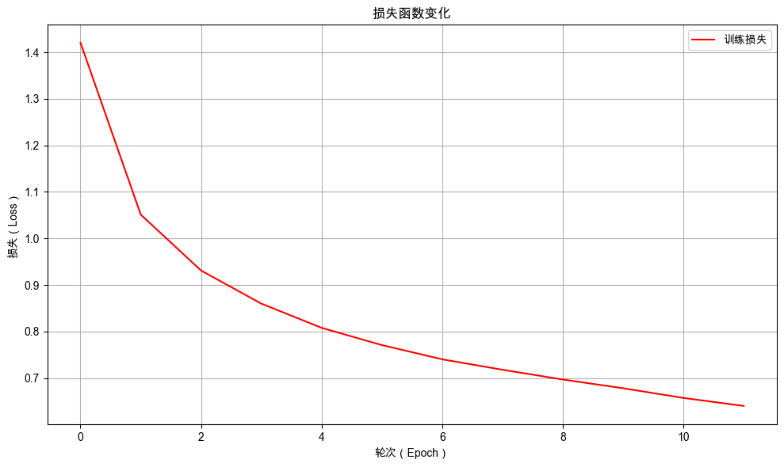

11. 从理解到创造：初识序列生成任务#
通过本次任务，你将学会如何使用 Seq2Seq 生成式模型解决加法计算问题。
11.1. 介绍#
上一章我们试图通过穷举加法结果的方式使用文本分类模型解决加法计算问题。但这种方法会导致分类类型的总数急剧增加，导致模型参数剧增、训练数据稀疏且无法泛化到未见过的值。模型在训练集上的准确率为 19.75%，在评估集上的准确率仅为 4.43%。本章我们将介绍如何使用文本生成方法来解决加法计算问题。
11.2. 最少必要知识#
Seq2Seq 模型
Encoder-Decoder 架构
11.3. 任务鸟瞰#
11.3.1. 任务分析#
本次的任务是使用生成式模型对三位数以内的加法运算进行预测。

如图所示，生成式模型在生成答案时采用逐 Token 的方式，依次生成每个 Token，直至输出完整的答案序列。这种从一个序列（Sequence) 到另一个序列（Sequence）的模型，一般简称为 Seq2Seq 模型。
11.3.2. 模型结构#
当前的 Seq2Seq 模型通常使用编码器-解码器架构，由 Encoder 和 Decoder 两部分组成。本章的加法计算模型结构如下图所示：

Encoder 负责将输入序列编码为固定长度的特征向量，Decoder 负责将编码后的特征向量解码为输出序列。

下面我们进入实战部分，依然沿用 NLP 任务的通用开发流程组织本章内容：数据准备、模型定义、模型训练与模型评估。
在正式开始之前，先配置环境，避免因为环境不同而导致程序不能复现。
11.4. 环境配置#
11.4.1. 安装依赖#
!pip install --upgrade dsxllm
11.4.2. 环境版本#
from dsxllm.util import show_version
show_version()
/Users/kong/opt/anaconda3/envs/dsx-ai/lib/python3.12/site-packages/tqdm/auto.py:21: TqdmWarning: IProgress not found. Please update jupyter and ipywidgets. See https://ipywidgets.readthedocs.io/en/stable/user_install.html
from .autonotebook import tqdm as notebook_tqdm
本书愿景：
+------+--------------------------------------------------------+
| Info | 《动手学大语言模型》 |
+------+--------------------------------------------------------+
| 作者 | 吾辈亦有感 |
| 哔站 | https://space.bilibili.com/3546632320715420 |
| 定位 | 基于'从零构建'的理念，用实战帮助程序员快速入门大模型。 |
| 愿景 | 若让你的AI学习之路走的更容易一点，我将倍感荣幸！祝好😄 |
+------+--------------------------------------------------------+
环境信息：
+-------------+--------------+------------------------+
| Python 版本 | PyTorch 版本 | PyTorch Lightning 版本 |
+-------------+--------------+------------------------+
| 3.12.12 | 2.10.0 | 2.6.1 |
+-------------+--------------+------------------------+
11.5. 数据准备#
11.5.1. 数据集下载#
11.5.2. 观察数据#
# 打开文件并读取前5行
from dsxllm.util import preview_file
preview_file('./dataset/addition_train.txt', 5)
| 行数 | 内容 | |
|---|---|---|
| 0 | 1 | 12+991=1003 |
| 1 | 2 | 188+350=538 |
| 2 | 3 | 60+899=959 |
| 3 | 4 | 122+72=194 |
| 4 | 5 | 727+52=779 |
本次的数据集具有以下特征：
每条样本均为一个加法算式，其中等号前的问题是模型输入，等号后的答案是对应的监督标签。
词表规模较小，可采用字符级分词器，将每个字符（包括数字0-9、运算符“+”、“=”以及空格等）视为独立的 Token 进行处理。
数据集最多只支持三位数以内加法计算，所以编码器模型输入序列的最大长度为 7。
由于两个三位数相加的结果范围在0至1998之间（两个三位数相加的最大值），解码器模型输出序列的最大长度为 4。
处理数据时，需要将每一个样本根据等号进行分割，将等号前的问题作为输入，等号后的问题作为标签。与分类模型不同的是，这里的标签不再是一个类别，而是一个序列，具体过程如下所示：

为了能够批量处理数据，需要对输入和输出都进行长度对齐，本章计算的三位数以内的加法，所以输入序列的最大长度为 7，输出序列的最大长度为 4。
11.5.3. 自定义分词器#
在 Seq2Seq 模型中，编码器-解码器架构通常需要配备两套分词器系统（如中英文翻译任务）：
编码器分词器：负责将输入序列转换为token ID序列，为编码器提供数字化的输入表示。
解码器分词器：负责将目标输出序列转换为token ID序列，为解码器提供训练时的监督信号。
然而，在本章的加法计算任务中，由于输入（算式）和输出（结果）都由相同的字符集合构成（数字0-9、运算符”+”和”=”），我们采用单一共享分词器的设计方案，统一处理输入和输出序列的分词过程。
在分词时，需要进行长度对齐，处理过程如下：

以 12+8 为例，最终会被处理成如下 json 格式：
[
{
"input_ids": [1, 2, 10, 8, 12, 12, 12],
"attention_mask": [1, 1, 1, 1, 0, 0, 0]
}
]
其中 input_ids 表示输入序列的 token ID 序列，attention_mask 表示输入序列的 pad-mask 序列。
11.5.3.1. 加法分词器的代码实现#
from dsxllm.util import print_table
import torch
class SimpleTokenizer:
def __init__(self, vocab, pad_token="<|pad|>", unk_token="<|unk|>", bos_token="<|bos|>", eos_token="<|eos|>"):
"""
初始化简单分词器
"""
self.vocab = vocab
# 反向词汇表 (id -> token)
self.ids_to_tokens = {v: k for k, v in self.vocab.items()}
# 特殊token
self.pad_token = pad_token
self.pad_token_id = self.vocab[pad_token]
self.unk_token = unk_token
self.unk_token_id = self.vocab[unk_token]
self.bos_token = bos_token
self.bos_token_id = self.vocab[bos_token]
self.eos_token = eos_token
self.eos_token_id = self.vocab[eos_token]
self.special_tokens = [self.pad_token, self.unk_token, self.bos_token, self.eos_token]
# 词汇表大小
self.vocab_size = len(self.ids_to_tokens)
def encode(self, text):
# 将文本拆分为单个字符和特殊标记
tokens = self._tokenize_special_tokens(text)
# 将每个token转换为对应的token ID
input_ids = [self.vocab[token] for token in tokens if token in self.vocab]
return input_ids
def _tokenize_special_tokens(self, text):
# 识别并处理特殊标记
tokens = []
i = 0
while i < len(text):
# 检查是否匹配特殊标记
for token in self.special_tokens:
if text[i:i + len(token)] == token:
tokens.append(token)
i += len(token)
break
else:
# 如果不是特殊标记，则逐个字符处理
tokens.append(text[i])
i += 1
return tokens
def decode(self, input_ids, skip_special_tokens=True):
# 如果 input_ids 是 torch.Tensor，则转换为列表
if isinstance(input_ids, torch.Tensor):
input_ids = input_ids.squeeze().tolist()
# 将token ID序列转换为对应的字符
tokens = [self.ids_to_tokens.get(id) for id in input_ids]
# 去除开始符和结束符
if skip_special_tokens:
tokens = [token for token in tokens if token not in self.special_tokens]
return ''.join(tokens)
def __call__(self, texts, max_length=None, padding=False, return_tensors=False):
"""
分词器主调用函数
"""
is_single_text = False
if isinstance(texts, str):
is_single_text = True
texts = [texts]
# 编码所有文本
all_token_ids = []
all_attention_masks = []
for text in texts:
token_ids = self.encode(text)
# 处理填充和注意力掩码
if padding and max_length is not None:
attention_mask = [1] * len(token_ids) + [0] * (max_length - len(token_ids))
token_ids += [self.pad_token_id] * (max_length - len(token_ids))
else:
attention_mask = [1] * len(token_ids)
all_token_ids.append(token_ids)
all_attention_masks.append(attention_mask)
if is_single_text:
all_token_ids = all_token_ids[0]
all_attention_masks = all_attention_masks[0]
# 转换为tensor
if return_tensors:
all_token_ids = torch.tensor(all_token_ids, dtype=torch.long)
all_attention_masks = torch.tensor(all_attention_masks, dtype=torch.long)
return {'input_ids': all_token_ids, 'attention_mask': all_attention_masks}
def info(self):
"""
打印分词器的详细信息
"""
# 通用信息表
info_data = [
["Vocabulary Size", self.vocab_size],
["Padding Token", f"{self.pad_token} (ID: {self.pad_token_id})"],
["Unknown Token", f"{self.unk_token} (ID: {self.unk_token_id})"],
["Start Token", f"{self.bos_token} (ID: {self.bos_token_id})"],
["End Token", f"{self.eos_token} (ID: {self.eos_token_id})"]
]
print_table("General Information", field_names=["Information", "Value"], data=info_data)
# 字符到ID的映射表
print_table("Token Mapping", field_names=["Token", "ID"], data=[
[char, char_id] for char, char_id in self.vocab.items()
])
# 编码解码示例表
example = "12+8" # 示例输入
encode_result = self(example, max_length=7, padding=True)
print_table("Encoding and Decoding Example", field_names=["Field", "Value"], data=[
["Input", example],
["Token Ids", encode_result['input_ids']],
["Pad Mask", encode_result['attention_mask']],
["Decode", self.decode(encode_result['input_ids'])]
])
11.5.3.2. 创建加法分词器的实例#
# 定义词汇表，将每个字符映射到唯一的索引编号
vocab = {
"0": 0,
"1": 1,
"2": 2,
"3": 3,
"4": 4,
"5": 5,
"6": 6,
"7": 7,
"8": 8,
"9": 9,
"+": 10,
"=": 11,
"<|pad|>": 12,
"<|unk|>": 13,
"<|bos|>": 14,
"<|eos|>": 15
}
# 使用定义的词汇表创建分词器实例
tokenizer = SimpleTokenizer(vocab)
# 打印分词器信息
tokenizer.info()
General Information：
+-----------------+------------------+
| Information | Value |
+-----------------+------------------+
| Vocabulary Size | 16 |
| Padding Token | <|pad|> (ID: 12) |
| Unknown Token | <|unk|> (ID: 13) |
| Start Token | <|bos|> (ID: 14) |
| End Token | <|eos|> (ID: 15) |
+-----------------+------------------+
Token Mapping：
+---------+----+
| Token | ID |
+---------+----+
| 0 | 0 |
| 1 | 1 |
| 2 | 2 |
| 3 | 3 |
| 4 | 4 |
| 5 | 5 |
| 6 | 6 |
| 7 | 7 |
| 8 | 8 |
| 9 | 9 |
| + | 10 |
| = | 11 |
| <|pad|> | 12 |
| <|unk|> | 13 |
| <|bos|> | 14 |
| <|eos|> | 15 |
+---------+----+
Encoding and Decoding Example：
+-----------+---------------------------+
| Field | Value |
+-----------+---------------------------+
| Input | 12+8 |
| Token Ids | [1, 2, 10, 8, 12, 12, 12] |
| Pad Mask | [1, 1, 1, 1, 0, 0, 0] |
| Decode | 12+8 |
+-----------+---------------------------+
11.5.4. 自定义加法数据转换器#
使用分词器将文本转换为指定长度的 token ID 序列以及对应的填充掩码。
class TextTransform:
def __init__(self, tokenizer: SimpleTokenizer, max_length=20):
self.tokenizer = tokenizer
self.max_length = max_length
def __call__(self, text):
return self.tokenizer(text, max_length=self.max_length, padding=True, return_tensors=True)
11.5.5. 构造加法数据集#
以 16+75=91 为，将每个加法算式和对应的答案都转化成如下 json 格式：
{
'question': '16+75',
'answer': '91',
'encoder_input_ids': tensor([1, 6, 10, 7, 5, 12, 12]),
'encoder_pad_mask': tensor([1, 1, 1, 1, 1, 0, 0]),
'decoder_target_ids': tensor([ 9, 1, 12, 12]),
'decoder_pad_mask': tensor([1, 1, 0, 0])
}
转化后的数据集将包含以下字段：
question: 加法算式的原始文本answer: 对应的答案（便于评估测试）encoder_input_ids: 加法算式经过分词器转换得到的 Token ID 序列（编码器的输入）encoder_pad_mask: 对应的填充掩码（编码器输入的填充掩码）decoder_target_ids: 答案经过分词器转换得到的 Token ID 序列（解码器的目标输出）decoder_pad_mask: 答案对应的填充掩码（解码器输出的填充掩码）
11.5.5.1. 加法数据集的代码实现#
from torch.utils.data import Dataset
class TextGenerationDataset(Dataset):
"""
文本生成任务的数据集类
用于处理序列到序列的文本生成任务，如加法计算等
"""
def __init__(self, questions, answers, encoder_transform: TextTransform,
decoder_transform: TextTransform):
"""
初始化数据集
Args:
questions: 输入问题列表
answers: 对应答案列表
encoder_transform: 编码器文本转换器
decoder_transform: 解码器文本转换器
"""
self.questions = questions # 存储输入问题列表
self.answers = answers # 存储对应答案列表
self.encoder_transform = encoder_transform # 编码器文本预处理工具
self.decoder_transform = decoder_transform # 解码器文本预处理工具
def __len__(self):
"""返回数据集大小"""
return len(self.questions)
def __getitem__(self, idx):
"""
获取指定索引的数据样本
Args:
idx: 样本索引
Returns:
dict: 包含处理后的输入输出数据的字典
"""
question = self.questions[idx] # 获取第idx个问题
answer = self.answers[idx] # 获取第idx个答案
# 对输入问题进行预处理
question_encoded = self.encoder_transform(question)
encoder_input_ids = question_encoded["input_ids"] # 编码器输入token ID序列
encoder_pad_mask = question_encoded["attention_mask"] # 编码器注意力掩码
# 对目标答案进行预处理
answer_encoded = self.decoder_transform(answer)
answer_ids = answer_encoded["input_ids"] # 解码器目标token ID序列
answer_pad_mask = answer_encoded["attention_mask"] # 解码器注意力掩码
# 返回完整的数据样本
return {
"question": question, # 原始问题文本
"answer": answer, # 原始答案文本
'encoder_input_ids': encoder_input_ids, # 编码器输入IDs
'encoder_pad_mask': encoder_pad_mask, # 编码器填充掩码
'decoder_target_ids': answer_ids, # 解码器目标IDs
'decoder_pad_mask': answer_pad_mask # 解码器填充掩码
}
@classmethod
def from_file(cls, file_path, encoder_transform: TextTransform, decoder_transform: TextTransform):
"""
从txt文件加载数据集的类方法
Args:
file_path: 数据文件路径
encoder_transform: 编码器文本转换器
decoder_transform: 解码器文本转换器
Returns:
TextGenerationDataset: 数据集实例
Note:
txt格式应包含算式，使用等号分隔问题和答案
例如: "123+456=579"
"""
questions = [] # 存储解析出的问题
answers = [] # 存储解析出的答案
# 读取txt文件
with open(file_path, 'r', encoding='utf-8') as f:
for line in f:
if line.strip() == '': # 跳过空行
continue
try:
# 查找等号的位置，将行分割为问题和答案
idx = line.find('=')
# 将样本添加到列表中: (question, answer)，answer中去掉"="以及最后的"\n"
question = line[:idx] # 等号前的部分作为问题
answer = line[idx + 1:].strip() # 等号后的部分作为答案（去除首尾空白）
questions.append(question)
answers.append(answer)
except Exception as e:
# 如果处理某行时出错，打印错误信息并跳过
print(f"Error processing line: {line}")
print(f"Error message: {e}")
continue
# 创建数据集实例
return cls(questions, answers, encoder_transform, decoder_transform)
11.5.5.2. 创建加法数据集的实例#
from pprint import pprint
# 1️⃣ 初始化分词器
tokenizer = SimpleTokenizer(vocab)
# 2️⃣ 初始化数据转换
encoder_transform = TextTransform(tokenizer, max_length=7)
decoder_transform = TextTransform(tokenizer, max_length=4)
# 3️⃣ 加载数据集
file_path = "./dataset/addition_train.txt"
dataset = TextGenerationDataset.from_file(file_path, encoder_transform=encoder_transform,
decoder_transform=decoder_transform)
# 4️⃣ 打印数据样本，确认数据正确转换
pprint(dataset[0], sort_dicts=False)
{'question': '12+991',
'answer': '1003',
'encoder_input_ids': tensor([ 1, 2, 10, 9, 9, 1, 12]),
'encoder_pad_mask': tensor([1, 1, 1, 1, 1, 1, 0]),
'decoder_target_ids': tensor([1, 0, 0, 3]),
'decoder_pad_mask': tensor([1, 1, 1, 1])}
11.5.6. 初始化数据模组#
加法数据模组继承自 LightningDataModule，用于统一管理训练、验证和测试数据集。
11.5.6.1. 加法数据模组的代码实现#
import lightning as L
from torch.utils.data import DataLoader
class TextDataModule(L.LightningDataModule):
"""
文本生成任务的数据模块
继承自LightningDataModule，用于管理训练、验证和测试数据的加载
"""
def __init__(self, batch_size, encoder_transform: TextTransform, decoder_transform: TextTransform, train_data_file,
val_data_file="", test_data_file=""):
"""
初始化数据模块
Args:
batch_size: 批次大小
encoder_transform: 编码器文本转换器
decoder_transform: 解码器文本转换器
train_data_file: 训练数据文件路径
val_data_file: 验证数据文件路径（可选）
test_data_file: 测试数据文件路径（可选）
"""
super().__init__()
self.batch_size = batch_size # 设置批次大小
self.encoder_transform = encoder_transform # 编码器文本预处理转换器
self.decoder_transform = decoder_transform # 解码器文本预处理转换器
self.train_data_file = train_data_file # 训练数据文件路径
self.val_data_file = val_data_file # 验证数据文件路径
self.test_data_file = test_data_file # 测试数据文件路径
# 初始化数据集属性
self.test_dataset = None # 测试数据集
self.val_dataset = None # 验证数据集
self.train_dataset = None # 训练数据集
def prepare_data(self):
"""
准备数据的方法
用于下载数据集或进行一次性数据预处理操作
"""
pass
def setup(self, stage=None):
"""
设置数据集的方法
"""
# 加载训练数据集
self.train_dataset = TextGenerationDataset.from_file(self.train_data_file,
encoder_transform=self.encoder_transform,
decoder_transform=self.decoder_transform)
# 加载验证数据集
if self.val_data_file == "":
# 如果没有指定验证集，则使用训练集作为验证集
self.val_dataset = self.train_dataset
else:
# 加载指定的验证数据集
self.val_dataset = TextGenerationDataset.from_file(self.val_data_file,
encoder_transform=self.encoder_transform,
decoder_transform=self.decoder_transform)
# 加载测试数据集
if self.test_data_file == "":
# 如果没有指定测试集，则使用训练集作为测试集
self.test_dataset = self.train_dataset
else:
# 加载指定的测试数据集
self.test_dataset = TextGenerationDataset.from_file(self.test_data_file,
encoder_transform=self.encoder_transform,
decoder_transform=self.decoder_transform)
def train_dataloader(self):
"""
返回训练数据加载器
Returns:
DataLoader: 训练数据的DataLoader对象
"""
return DataLoader(self.train_dataset, batch_size=self.batch_size, shuffle=True)
def val_dataloader(self):
"""
返回验证数据加载器
Returns:
DataLoader: 验证数据的DataLoader对象
"""
return DataLoader(self.val_dataset, batch_size=self.batch_size)
def test_dataloader(self):
"""
返回测试数据加载器
Returns:
DataLoader: 测试数据的DataLoader对象
"""
return DataLoader(self.test_dataset, batch_size=self.batch_size)
11.5.6.2. 创建加法数据模组的实例#
from pprint import pprint
# 1️⃣ 初始化分词器
tokenizer = SimpleTokenizer(vocab)
# 2️⃣ 初始化数据转换
encoder_transform = TextTransform(tokenizer, max_length=7)
decoder_transform = TextTransform(tokenizer, max_length=4)
# 3️⃣ 加载数据模组
file_path = "./dataset/addition_train.txt"
text_datamodule = TextDataModule(batch_size=2, encoder_transform=encoder_transform, decoder_transform=decoder_transform,
train_data_file=file_path)
# 4️⃣ 调用 setup 方法初始化数据集
text_datamodule.setup()
# 5️⃣ 打印一个批次的数据
print("打印一个批次的数据：")
for batch in text_datamodule.train_dataloader():
pprint(batch, sort_dicts=False)
break
打印一个批次的数据：
{'question': ['89+65', '71+685'],
'answer': ['154', '756'],
'encoder_input_ids': tensor([[ 8, 9, 10, 6, 5, 12, 12],
[ 7, 1, 10, 6, 8, 5, 12]]),
'encoder_pad_mask': tensor([[1, 1, 1, 1, 1, 0, 0],
[1, 1, 1, 1, 1, 1, 0]]),
'decoder_target_ids': tensor([[ 1, 5, 4, 12],
[ 7, 5, 6, 12]]),
'decoder_pad_mask': tensor([[1, 1, 1, 0],
[1, 1, 1, 0]])}
11.6. 构建加法计算模型#
本次的加法计算模型由 Encoder 和 Decoder 两部分组成，其中 Encoder 用于编码输入序列，Decoder 用于生成输出序列。我们分别创建 Encoder 和 Decoder。
11.6.1. 构建编码器模型#
编码器模型由词嵌入层和 GRU 组成。词嵌入层将输入序列的 Token IDs 转换为嵌入向量，而 GRU 则负责提取加法算式蕴含的隐藏特征信息。编码器模型结构如下：

编码器进行前向计算的过程如下图所示，只取最后一个时间步的输出作为整个加法算式的特征向量。

11.6.1.1. 编码器的代码实现#
import torch
class Encoder(torch.nn.Module):
def __init__(self, vocab_size, embed_dim, hidden_dim, num_layers=1):
super(Encoder, self).__init__()
# 词嵌入层
self.embedding = torch.nn.Embedding(vocab_size, embed_dim)
# GRU
self.gru = torch.nn.GRU(
input_size=embed_dim,
hidden_size=hidden_dim,
num_layers=num_layers,
batch_first=True,
)
def forward(self, input_ids):
"""
前向传播
参数:
input_ids (Tensor): 输入序列的token IDs, shape: [batch_size, seq_len]
返回:
outputs (Tensor): 编码器所有时间步的输出, shape: [batch_size, seq_len, hidden_dim]
hidden (Tensor): 编码器最后时间步的隐藏状态, shape: [num_layers, batch_size, hidden_dim]
"""
embedded = self.embedding(input_ids)
outputs, hidden = self.gru(embedded)
return outputs, hidden
11.6.2. 构建解码器模型#
解码器模型由词嵌入层、GRU和输出层组成。词嵌入层将目标序列的 Token IDs 转换为嵌入向量，而 GRU 则负责融合编码器编码后的加法算式信息和已生成的序列信息，输出层则根据这些信息预测下一个字符。解码器模型结构如下：

解码器是根据已生成的 Token 序列预测下一个Token。
在训练阶段：正确的 Token IDs 是已知的，因此无论预测的结果如何，解码器都会根据正确的信息预测下一个 Token。
在预测阶段：正确的 Token IDs 是未知的，因此解码器会根据已生成的序列信息预测下一个 Token。
解码器训练阶段前向传播的过程如下图所示：

解码器预测阶段前向传播的过程如下图所示：

所以我们为解码器添加了两个前向方法：
forward：训练阶段前向传播，每个时间步的正确输入已知，可以进行批量计算。forward_step：预测阶段前向传播，每个时间步的输入是上一步的预测结果，使用单步解码。
编码器的 GRU 和解码器的 GRU 不同，编码器的 GRU 初始状态是全0向量，而解码器的 GRU 初始状态是编码器的最终隐藏状态。
11.6.2.1. 解码器的代码实现#
class Decoder(torch.nn.Module):
def __init__(self, vocab_size, embed_dim, hidden_dim, num_layers=1):
super(Decoder, self).__init__()
# 词嵌入层
self.embedding = torch.nn.Embedding(vocab_size, embed_dim)
# GRU
self.gru = torch.nn.GRU(
input_size=embed_dim,
hidden_size=hidden_dim,
num_layers=num_layers,
batch_first=True,
)
# 输出层
self.output_layer = torch.nn.Linear(hidden_dim, vocab_size)
def forward(self, input_ids, hidden):
"""
前向传播
参数:
input_ids (Tensor): 目标序列的token IDs, shape: [batch_size, seq_len]
hidden (Tensor): 编码器的最终隐藏状态, shape: [num_layers, batch_size, hidden_dim]
返回:
output_logits (Tensor): 每个时间步的词汇表分布, shape: [batch_size, seq_len, vocab_size]
hidden (Tensor): 解码器最后时间步的隐藏状态, shape: [num_layers, batch_size, hidden_dim]
"""
embedded = self.embedding(input_ids)
outputs, hidden = self.gru(embedded, hidden)
output_logits = self.output_layer(outputs)
return output_logits, hidden
def forward_step(self, input_id, hidden):
"""
单步解码：
- 输入：当前时间步的输入和隐藏状态
- 输出：当前时间步的输出和新的隐藏状态
"""
token_embed = self.embedding(input_id)
output, hidden = self.gru(token_embed, hidden)
output_logits = self.output_layer(output)
return output_logits, hidden
11.6.3. 构建完整的 Seq2Seq 加法计算模型#
完整的 Seq2Seq 加法计算模型由编码器和解码器组成，模型总体结构如下：

在创建 Seq2Seq 加法计算模型时，需要传入编码器的参数和解码器的参数，创建编码器和解码器的实例，并将它们组合在一起。
11.6.3.1. Seq2Seq 加法计算模型的代码实现#
forward() 前向计算过程分为两个阶段：编码阶段和解码阶段。
在编码阶段：使用编码器将输入序列编码为特征向量。
在解码阶段：使用解码器将编码后的特征向量解码为输出序列。
解码阶段分为两个过程：训练过程和推理过程。
训练过程
_decode_with_targets：训练过程是有监督的，需要提供正确的目标序列target_ids，主要的目的是从正确的信息中学习模型的参数，会使用批量计算加快训练。推理过程
_decode_autoregressive：推理过程是自回归的，不需要提供正确的目标序列，主要是从已生成的序列信息中生成下一个字符，用于预测加法算式的答案，会使用单步解码逐 Token 预测。
另外，之前使用分类模型只统计了整体答案的准确率，但是使用生成式的方法其中的某些 Token 可能预测错误，为了更精细的评估模型性能，在整体答案的准确率之外，还统计了每个 Token 的准确率。
class SequenceGenerator(L.LightningModule):
def __init__(self, tokenizer: SimpleTokenizer, embed_dim, hidden_dim, num_layers=1, learning_rate=1e-3,
generate_max_length=4):
super().__init__()
# 实例化编码器和解码器
self.encoder = Encoder(tokenizer.vocab_size, embed_dim, hidden_dim, num_layers)
self.decoder = Decoder(tokenizer.vocab_size, embed_dim, hidden_dim, num_layers)
self.tokenizer = tokenizer
self.learning_rate = learning_rate
self.generate_max_length = generate_max_length # 添加最大长度属性
# 用于存储训练和验证过程中的指标
self.train_step_losses = []
self.train_epoch_losses = []
self.validation_step_outputs = []
self.validation_epoch_outputs = []
# 示例输入
self.example_input_array = (
torch.randint(0, tokenizer.vocab_size, (32, 10), dtype=torch.long),
torch.randint(0, tokenizer.vocab_size, (32, 5), dtype=torch.long)
)
def forward(self, input_ids, target_ids=None):
"""前向传播"""
batch_size = input_ids.size(0)
# 1. 编码阶段：提取输入序列特征
encoder_outputs, encoder_hidden = self.encoder(input_ids)
# 2. 解码阶段：生成输出序列
if target_ids is not None:
# 训练过程：使用真实目标序列作为输入（teacher forcing）
return self._decode_with_targets(encoder_outputs, encoder_hidden, target_ids, self.generate_max_length)
else:
# 推理过程：自回归生成序列
return self._decode_autoregressive(encoder_outputs, encoder_hidden, batch_size, self.generate_max_length)
def _decode_with_targets(self, encoder_outputs, encoder_hidden, target_ids, generate_max_length):
"""
训练阶段解码：使用teacher forcing
"""
batch_size = encoder_outputs.size(0)
# 初始化解码器输入为起始标记（这里假设用空格作为起始符，ID为12）
decoder_input = torch.full((batch_size, 1), self.tokenizer.bos_token_id, device=encoder_outputs.device,
dtype=torch.long)
decoder_hidden = encoder_hidden
decoder_outputs = []
# 使用目标序列作为输入，逐步解码
for i in range(generate_max_length):
decoder_output, decoder_hidden = self.decoder.forward_step(decoder_input, decoder_hidden)
decoder_outputs.append(decoder_output)
# 使用真实目标作为下一步输入
decoder_input = target_ids[:, i].unsqueeze(1)
# 拼接所有时间步的输出
decoder_outputs = torch.cat(decoder_outputs, dim=1)
return torch.nn.functional.log_softmax(decoder_outputs, dim=-1)
def _decode_autoregressive(self, encoder_outputs, encoder_hidden, batch_size, generate_max_length):
"""
推理阶段解码：自回归生成
"""
# 初始化解码器输入为起始标记
decoder_input = torch.full((batch_size, 1), self.tokenizer.bos_token_id,
device=encoder_outputs.device, dtype=torch.long)
decoder_hidden = encoder_hidden
decoder_outputs = []
for i in range(generate_max_length):
# 单步解码
decoder_output, decoder_hidden = self.decoder.forward_step(decoder_input, decoder_hidden)
decoder_outputs.append(decoder_output)
# 使用模型预测作为下一步输入
_, topi = decoder_output.topk(1)
decoder_input = topi.squeeze(-1).detach()
# 拼接所有时间步的输出
decoder_outputs = torch.cat(decoder_outputs, dim=1)
return torch.nn.functional.log_softmax(decoder_outputs, dim=-1)
def training_step(self, batch, batch_idx):
"""训练步骤"""
input_ids = batch["encoder_input_ids"]
target_ids = batch["decoder_target_ids"]
# 前向传播
outputs = self(input_ids, target_ids) # 训练时传入target_ids
# 计算损失 - 需要调整维度以适应交叉熵损失
# outputs: [batch_size, seq_len, vocab_size]
# target_ids: [batch_size, seq_len]
loss = torch.nn.functional.cross_entropy(
outputs.view(-1, outputs.size(-1)),
target_ids.view(-1)
)
"""
对于序列生成任务，通常我们会采用以下几种方式来计算准确率：
1. 序列级别准确率：整个生成序列完全匹配目标序列才算正确
2. token级别准确率：计算所有token中预测正确的比例
3. BLEU/ROUGE等评价指标：更复杂的文本生成评价指标
"""
# 计算token级别的准确率
preds = torch.argmax(outputs, dim=-1)
mask = (target_ids != self.tokenizer.pad_token_id) # 忽略填充位置
correct_tokens = ((preds == target_ids) & mask).sum().float()
total_tokens = mask.sum().float()
token_acc = correct_tokens / total_tokens
# 计算序列级别的准确率
# 对于每个序列，只有当所有非填充位置都预测正确才算正确
seq_correct = ((preds == target_ids) | ~mask).all(dim=1).float().mean()
# 记录日志
self.log('train_loss', loss)
self.log('train_token_acc', token_acc)
self.log('train_seq_acc', seq_correct)
# 存储损失以便后续使用
self.train_step_losses.append(loss.detach())
return loss
def validation_step(self, batch, batch_idx):
"""验证步骤"""
input_ids = batch["encoder_input_ids"]
target_ids = batch["decoder_target_ids"]
# 前向传播
outputs = self(input_ids)
# 计算预测值
preds = torch.argmax(outputs, dim=-1)
# 创建掩码以忽略填充值
mask = (target_ids != self.tokenizer.pad_token_id)
# 计算token级别的准确率
correct_tokens = ((preds == target_ids) & mask).sum().float()
total_tokens = mask.sum().float()
token_acc = correct_tokens / total_tokens if total_tokens > 0 else torch.tensor(0.0)
# 计算序列级别的准确率
seq_correct = ((preds == target_ids) | ~mask).all(dim=1).float().mean()
# 保存结果供epoch结束时使用
self.validation_step_outputs.append({
'preds': preds,
'target_ids': target_ids,
'token_acc': token_acc,
'seq_acc': seq_correct
})
if batch_idx % 100 == 0:
print(
f"Validation Step {batch_idx}: Token Accuracy={token_acc.item():.4f}, Seq Accuracy={seq_correct.item():.4f}")
def on_train_epoch_end(self):
"""在每个训练epoch结束时计算整体损失"""
if self.train_step_losses: # 确保列表不为空
# 计算并记录平均训练损失
avg_train_loss = torch.stack(self.train_step_losses).mean()
self.train_epoch_losses.append({
"epoch": self.current_epoch,
"loss": avg_train_loss.item() # 转换为 Python 数值
})
# 清空列表为下一个 epoch 做准备
self.train_step_losses.clear()
def on_validation_epoch_end(self):
"""在每个验证epoch结束时计算整体准确率"""
# 汇总所有预测结果和标签
all_preds = torch.cat([x['preds'] for x in self.validation_step_outputs])
all_target_ids = torch.cat([x['target_ids'] for x in self.validation_step_outputs])
# 1. 计算序列（样本）级别的准确率
# 创建掩码以标识非填充位置
mask = (all_target_ids != self.tokenizer.pad_token_id)
# 计算每个序列是否完全正确（所有非填充位置都预测正确）
seq_correct = ((all_preds == all_target_ids) | ~mask).all(dim=1)
# 序列总数
total_sequences = all_preds.size(0)
# 正确预测的序列数
correct_sequences = seq_correct.sum().item()
# 序列级别准确率
seq_acc = correct_sequences / total_sequences if total_sequences > 0 else 0.0
# 2. 计算 Token 级别的准确率
# 计算所有非填充位置的预测总数
total_tokens = mask.sum().item()
# 计算所有非填充位置预测正确的总数
correct_tokens = ((all_preds == all_target_ids) & mask).sum().item()
# Token 级别准确率
token_acc = correct_tokens / total_tokens if total_tokens > 0 else 0.0
# 3. 将评估结果保存到 validation_epoch_outputs 列表中
self.validation_epoch_outputs.append({
"epoch": self.current_epoch,
"总样本数": total_sequences,
"正确样本数": correct_sequences,
"样本准确率": round(seq_acc, 4),
"总Token数": total_tokens,
"正确Token数": correct_tokens,
"Token准确率": round(token_acc, 4)
})
# 记录日志
self.log('total_sequences', total_sequences)
self.log('correct_sequences', correct_sequences)
self.log('seq_acc', seq_acc)
self.log('total_tokens', total_tokens)
self.log('correct_tokens', correct_tokens)
self.log('token_acc', token_acc)
# 清空缓存
self.validation_step_outputs.clear()
def clear_cache(self):
"""清除缓存"""
self.train_step_losses.clear()
self.train_epoch_losses.clear()
self.validation_step_outputs.clear()
self.validation_epoch_outputs.clear()
def configure_optimizers(self):
"""配置优化器"""
optimizer = torch.optim.Adam(self.parameters(), lr=self.learning_rate)
return optimizer
def generate(self, input_ids):
"""
根据输入序列生成输出序列文本
参数:
input_ids (Tensor): 输入序列的token IDs, shape: [batch_size, seq_len]
返回:
generated_texts (list): 生成的文本列表
"""
# 1. 调用模型的 forward 方法 (推理模式，无 target_ids) 生成 logits
generated_logits = self(input_ids) # Shape: [batch_size, generate_max_length, vocab_size]
# 2. 获取概率最高的 token ID
generated_ids = torch.argmax(generated_logits, dim=-1) # Shape: [batch_size, generate_max_length]
# 3. 直接使用 tokenizer.decode 方法将 token ID 转换为文本
generated_texts = []
for i in range(generated_ids.size(0)): # 遍历 batch 中的每个样本
# 调用 tokenizer 的 decode 方法，并跳过特殊 token
text = self.tokenizer.decode(generated_ids[i], skip_special_tokens=True)
generated_texts.append(text)
return generated_texts
11.6.3.2. Seq2Seq 加法计算模型的详细信息#
# 导入PyTorch Lightning的模型摘要工具，用于查看模型结构和参数信息
from lightning.pytorch.utilities.model_summary import ModelSummary
# 创建序列生成模型实例
model = SequenceGenerator(tokenizer, embed_dim=128, hidden_dim=128)
# 创建模型摘要对象，max_depth=-1表示显示完整的模型层次结构
summary = ModelSummary(model, max_depth=-1)
# 打印模型摘要信息
print(summary)
| Name | Type | Params | Mode | FLOPs | In sizes | Out sizes
-----------------------------------------------------------------------------------------------------------------------------------
0 | encoder | Encoder | 101 K | train | 62.9 M | [32, 10] | [[32, 10, 128], [1, 32, 128]]
1 | encoder.embedding | Embedding | 2.0 K | train | 0 | [32, 10] | [32, 10, 128]
2 | encoder.gru | GRU | 99.1 K | train | 62.9 M | [32, 10, 128] | [[32, 10, 128], [1, 32, 128]]
3 | decoder | Decoder | 103 K | train | 0 | ? | ?
4 | decoder.embedding | Embedding | 2.0 K | train | 0 | [32, 1] | [32, 1, 128]
5 | decoder.gru | GRU | 99.1 K | train | 25.2 M | [[32, 1, 128], [1, 32, 128]] | [[32, 1, 128], [1, 32, 128]]
6 | decoder.output_layer | Linear | 2.1 K | train | 524 K | [32, 1, 128] | [32, 1, 16]
-----------------------------------------------------------------------------------------------------------------------------------
204 K Trainable params
0 Non-trainable params
204 K Total params
0.817 Total estimated model params size (MB)
7 Modules in train mode
0 Modules in eval mode
88.6 M Total Flops
从模型摘要中我们可以看到该模型由 encoder 和 decoder 组成。
encoder包含两个层embedding和gru；decoder包含三个层embedding、gru和output_layer；
11.7. 模型的训练与评估#
11.7.1. 初始化模型和训练器#
# 超参数
batch_size = 50 # 批次大小
encoder_max_length = 7 # 编码器最大输入长度（3位数字 + 运算符 + 3位数字）
decoder_max_length = 4 # 解码器最大输出长度（两个3位数字的和的最大值为1998，长度为4位）
# 1️⃣ 初始化分词器
tokenizer = SimpleTokenizer(vocab)
# 2️⃣ 初始化编码器和解码器的数据转换
encoder_transform = TextTransform(tokenizer, max_length=encoder_max_length)
decoder_transform = TextTransform(tokenizer, max_length=decoder_max_length)
# 3️⃣ 加载数据模组
file_path = "./dataset/addition_train.txt"
datamodule = TextDataModule(batch_size=batch_size, encoder_transform=encoder_transform,
decoder_transform=decoder_transform, train_data_file=file_path)
# 4️⃣ 初始化模型
model = SequenceGenerator(tokenizer, embed_dim=128, hidden_dim=128)
# 5️⃣ 初始化训练器
# max_epochs=12: 最大训练轮数为12
# log_every_n_steps=3: 每3个步骤记录一次日志
# check_val_every_n_epoch=1: 每1个epoch进行一次验证
# num_sanity_val_steps=0: 验证集的初始检查次数，设置为0表示不进行初始检查
# enable_progress_bar=False: 不显示进度条
trainer = L.Trainer(max_epochs=12, log_every_n_steps=3, check_val_every_n_epoch=1, num_sanity_val_steps=0,
enable_progress_bar=False)
GPU available: True (mps), used: True
TPU available: False, using: 0 TPU cores
💡 Tip: For seamless cloud logging and experiment tracking, try installing [litlogger](https://pypi.org/project/litlogger/) to enable LitLogger, which logs metrics and artifacts automatically to the Lightning Experiments platform.
11.7.2. 训练前评估#
训练前评估为模型性能建立初始性能基准。
# 直接调用验证函数进行训练前评估
trainer.validate(model=model, datamodule=datamodule)
💡 Tip: For seamless cloud uploads and versioning, try installing [litmodels](https://pypi.org/project/litmodels/) to enable LitModelCheckpoint, which syncs automatically with the Lightning model registry.
/Users/kong/opt/anaconda3/envs/dsx-ai/lib/python3.12/site-packages/lightning/pytorch/utilities/_pytree.py:21: `isinstance(treespec, LeafSpec)` is deprecated, use `isinstance(treespec, TreeSpec) and treespec.is_leaf()` instead.
Validation Step 0: Token Accuracy=0.0186, Seq Accuracy=0.0000
Validation Step 100: Token Accuracy=0.0194, Seq Accuracy=0.0000
Validation Step 200: Token Accuracy=0.0063, Seq Accuracy=0.0000
Validation Step 300: Token Accuracy=0.0132, Seq Accuracy=0.0000
Validation Step 400: Token Accuracy=0.0387, Seq Accuracy=0.0000
Validation Step 500: Token Accuracy=0.0255, Seq Accuracy=0.0000
Validation Step 600: Token Accuracy=0.0185, Seq Accuracy=0.0000
Validation Step 700: Token Accuracy=0.0429, Seq Accuracy=0.0000
Validation Step 800: Token Accuracy=0.0321, Seq Accuracy=0.0000
┏━━━━━━━━━━━━━━━━━━━━━━━━━━━┳━━━━━━━━━━━━━━━━━━━━━━━━━━━┓ ┃ Validate metric ┃ DataLoader 0 ┃ ┡━━━━━━━━━━━━━━━━━━━━━━━━━━━╇━━━━━━━━━━━━━━━━━━━━━━━━━━━┩ │ correct_sequences │ 1.0 │ │ correct_tokens │ 4503.0 │ │ seq_acc │ 2.2222222469281405e-05 │ │ token_acc │ 0.03197585791349411 │ │ total_sequences │ 45000.0 │ │ total_tokens │ 140825.0 │ └───────────────────────────┴───────────────────────────┘
[{'total_sequences': 45000.0,
'correct_sequences': 1.0,
'seq_acc': 2.2222222469281405e-05,
'total_tokens': 140825.0,
'correct_tokens': 4503.0,
'token_acc': 0.03197585791349411}]
在训练前评估中，Token 准确率仅为 3.19%，45000 个样本中只有 1 个答案预测正确，正确率几乎为 0。说明模型在训练前几乎不可用。
11.7.3. 训练模型#
调用 trainer.fit() 训练 12 个轮次。
model.clear_cache()
trainer.fit(model=model, datamodule=datamodule)
┏━━━┳━━━━━━━━━┳━━━━━━━━━┳━━━━━━━━┳━━━━━━━┳━━━━━━━━┳━━━━━━━━━━┳━━━━━━━━━━━━━━━━━━━━━━━━━━━━━━━┓ ┃ ┃ Name ┃ Type ┃ Params ┃ Mode ┃ FLOPs ┃ In sizes ┃ Out sizes ┃ ┡━━━╇━━━━━━━━━╇━━━━━━━━━╇━━━━━━━━╇━━━━━━━╇━━━━━━━━╇━━━━━━━━━━╇━━━━━━━━━━━━━━━━━━━━━━━━━━━━━━━┩ │ 0 │ encoder │ Encoder │ 101 K │ train │ 62.9 M │ [32, 10] │ [[32, 10, 128], [1, 32, 128]] │ │ 1 │ decoder │ Decoder │ 103 K │ train │ 0 │ ? │ ? │ └───┴─────────┴─────────┴────────┴───────┴────────┴──────────┴───────────────────────────────┘
Trainable params: 204 K Non-trainable params: 0 Total params: 204 K Total estimated model params size (MB): 0 Modules in train mode: 7 Modules in eval mode: 0 Total FLOPs: 88.6 M
Validation Step 0: Token Accuracy=0.4348, Seq Accuracy=0.0400
Validation Step 100: Token Accuracy=0.3871, Seq Accuracy=0.0200
Validation Step 200: Token Accuracy=0.4277, Seq Accuracy=0.0600
Validation Step 300: Token Accuracy=0.4238, Seq Accuracy=0.0200
Validation Step 400: Token Accuracy=0.4516, Seq Accuracy=0.0200
Validation Step 500: Token Accuracy=0.4395, Seq Accuracy=0.0600
Validation Step 600: Token Accuracy=0.4321, Seq Accuracy=0.0800
Validation Step 700: Token Accuracy=0.3926, Seq Accuracy=0.0200
Validation Step 800: Token Accuracy=0.4167, Seq Accuracy=0.0400
Validation Step 0: Token Accuracy=0.4658, Seq Accuracy=0.0800
Validation Step 100: Token Accuracy=0.4452, Seq Accuracy=0.0000
Validation Step 200: Token Accuracy=0.4403, Seq Accuracy=0.0600
Validation Step 300: Token Accuracy=0.4437, Seq Accuracy=0.0600
Validation Step 400: Token Accuracy=0.4581, Seq Accuracy=0.0000
Validation Step 500: Token Accuracy=0.5223, Seq Accuracy=0.0600
Validation Step 600: Token Accuracy=0.5247, Seq Accuracy=0.0600
Validation Step 700: Token Accuracy=0.4601, Seq Accuracy=0.0200
Validation Step 800: Token Accuracy=0.4615, Seq Accuracy=0.0000
Validation Step 0: Token Accuracy=0.4534, Seq Accuracy=0.0200
Validation Step 100: Token Accuracy=0.5613, Seq Accuracy=0.1400
Validation Step 200: Token Accuracy=0.5597, Seq Accuracy=0.1200
Validation Step 300: Token Accuracy=0.5364, Seq Accuracy=0.0200
Validation Step 400: Token Accuracy=0.5419, Seq Accuracy=0.1000
Validation Step 500: Token Accuracy=0.5669, Seq Accuracy=0.1200
Validation Step 600: Token Accuracy=0.5988, Seq Accuracy=0.1400
Validation Step 700: Token Accuracy=0.5337, Seq Accuracy=0.0400
Validation Step 800: Token Accuracy=0.5449, Seq Accuracy=0.0800
Validation Step 0: Token Accuracy=0.6087, Seq Accuracy=0.1200
Validation Step 100: Token Accuracy=0.5290, Seq Accuracy=0.0800
Validation Step 200: Token Accuracy=0.5535, Seq Accuracy=0.1000
Validation Step 300: Token Accuracy=0.5166, Seq Accuracy=0.0200
Validation Step 400: Token Accuracy=0.6129, Seq Accuracy=0.1600
Validation Step 500: Token Accuracy=0.5732, Seq Accuracy=0.1000
Validation Step 600: Token Accuracy=0.6049, Seq Accuracy=0.1600
Validation Step 700: Token Accuracy=0.5337, Seq Accuracy=0.1800
Validation Step 800: Token Accuracy=0.5769, Seq Accuracy=0.1200
Validation Step 0: Token Accuracy=0.5342, Seq Accuracy=0.1400
Validation Step 100: Token Accuracy=0.6194, Seq Accuracy=0.2000
Validation Step 200: Token Accuracy=0.6352, Seq Accuracy=0.1200
Validation Step 300: Token Accuracy=0.5894, Seq Accuracy=0.0600
Validation Step 400: Token Accuracy=0.6194, Seq Accuracy=0.2200
Validation Step 500: Token Accuracy=0.5669, Seq Accuracy=0.1200
Validation Step 600: Token Accuracy=0.5370, Seq Accuracy=0.0800
Validation Step 700: Token Accuracy=0.5828, Seq Accuracy=0.1200
Validation Step 800: Token Accuracy=0.6026, Seq Accuracy=0.1000
Validation Step 0: Token Accuracy=0.5901, Seq Accuracy=0.1000
Validation Step 100: Token Accuracy=0.5935, Seq Accuracy=0.1200
Validation Step 200: Token Accuracy=0.5912, Seq Accuracy=0.1200
Validation Step 300: Token Accuracy=0.5497, Seq Accuracy=0.0800
Validation Step 400: Token Accuracy=0.6065, Seq Accuracy=0.1800
Validation Step 500: Token Accuracy=0.6178, Seq Accuracy=0.1600
Validation Step 600: Token Accuracy=0.5988, Seq Accuracy=0.1200
Validation Step 700: Token Accuracy=0.6196, Seq Accuracy=0.0800
Validation Step 800: Token Accuracy=0.5833, Seq Accuracy=0.1400
Validation Step 0: Token Accuracy=0.5839, Seq Accuracy=0.1400
Validation Step 100: Token Accuracy=0.5806, Seq Accuracy=0.1200
Validation Step 200: Token Accuracy=0.6478, Seq Accuracy=0.1400
Validation Step 300: Token Accuracy=0.5497, Seq Accuracy=0.0800
Validation Step 400: Token Accuracy=0.5806, Seq Accuracy=0.1200
Validation Step 500: Token Accuracy=0.6433, Seq Accuracy=0.2000
Validation Step 600: Token Accuracy=0.6296, Seq Accuracy=0.1400
Validation Step 700: Token Accuracy=0.5521, Seq Accuracy=0.0800
Validation Step 800: Token Accuracy=0.5385, Seq Accuracy=0.0400
Validation Step 0: Token Accuracy=0.6460, Seq Accuracy=0.1400
Validation Step 100: Token Accuracy=0.6065, Seq Accuracy=0.1800
Validation Step 200: Token Accuracy=0.6101, Seq Accuracy=0.1000
Validation Step 300: Token Accuracy=0.6026, Seq Accuracy=0.1200
Validation Step 400: Token Accuracy=0.6323, Seq Accuracy=0.2200
Validation Step 500: Token Accuracy=0.6624, Seq Accuracy=0.2400
Validation Step 600: Token Accuracy=0.6358, Seq Accuracy=0.1600
Validation Step 700: Token Accuracy=0.6074, Seq Accuracy=0.1600
Validation Step 800: Token Accuracy=0.5962, Seq Accuracy=0.1000
Validation Step 0: Token Accuracy=0.6335, Seq Accuracy=0.1400
Validation Step 100: Token Accuracy=0.6387, Seq Accuracy=0.1800
Validation Step 200: Token Accuracy=0.6478, Seq Accuracy=0.1800
Validation Step 300: Token Accuracy=0.6623, Seq Accuracy=0.2600
Validation Step 400: Token Accuracy=0.6194, Seq Accuracy=0.1800
Validation Step 500: Token Accuracy=0.6943, Seq Accuracy=0.2800
Validation Step 600: Token Accuracy=0.5988, Seq Accuracy=0.1000
Validation Step 700: Token Accuracy=0.6380, Seq Accuracy=0.1400
Validation Step 800: Token Accuracy=0.6218, Seq Accuracy=0.1600
Validation Step 0: Token Accuracy=0.6522, Seq Accuracy=0.2000
Validation Step 100: Token Accuracy=0.6000, Seq Accuracy=0.1600
Validation Step 200: Token Accuracy=0.6604, Seq Accuracy=0.2600
Validation Step 300: Token Accuracy=0.6093, Seq Accuracy=0.1400
Validation Step 400: Token Accuracy=0.6516, Seq Accuracy=0.2200
Validation Step 500: Token Accuracy=0.6306, Seq Accuracy=0.1400
Validation Step 600: Token Accuracy=0.6235, Seq Accuracy=0.1400
Validation Step 700: Token Accuracy=0.6933, Seq Accuracy=0.2800
Validation Step 800: Token Accuracy=0.6667, Seq Accuracy=0.2200
Validation Step 0: Token Accuracy=0.6273, Seq Accuracy=0.1200
Validation Step 100: Token Accuracy=0.6387, Seq Accuracy=0.1600
Validation Step 200: Token Accuracy=0.6226, Seq Accuracy=0.1800
Validation Step 300: Token Accuracy=0.6887, Seq Accuracy=0.2800
Validation Step 400: Token Accuracy=0.6258, Seq Accuracy=0.1400
Validation Step 500: Token Accuracy=0.6943, Seq Accuracy=0.2000
Validation Step 600: Token Accuracy=0.6605, Seq Accuracy=0.1600
Validation Step 700: Token Accuracy=0.5583, Seq Accuracy=0.1200
Validation Step 800: Token Accuracy=0.6795, Seq Accuracy=0.2200
Validation Step 0: Token Accuracy=0.6398, Seq Accuracy=0.1600
Validation Step 100: Token Accuracy=0.6645, Seq Accuracy=0.2400
Validation Step 200: Token Accuracy=0.6855, Seq Accuracy=0.2400
Validation Step 300: Token Accuracy=0.6556, Seq Accuracy=0.2600
Validation Step 400: Token Accuracy=0.6516, Seq Accuracy=0.1600
Validation Step 500: Token Accuracy=0.6688, Seq Accuracy=0.1800
Validation Step 600: Token Accuracy=0.6111, Seq Accuracy=0.1200
Validation Step 700: Token Accuracy=0.6687, Seq Accuracy=0.2400
Validation Step 800: Token Accuracy=0.6474, Seq Accuracy=0.2000
`Trainer.fit` stopped: `max_epochs=12` reached.
11.7.3.1. 训练过程可视化#
绘制训练过程中损失值的变化曲线。
from dsxllm.util import plot_loss_curves
plot_loss_curves(model.train_epoch_losses)

11.7.3.2. 查看模型评估记录#
查看训练过程中的评估结果，观察模型在验证集上的表现。
from dsxllm.util import to_dataframe
to_dataframe(model.validation_epoch_outputs)
| epoch | 总样本数 | 正确样本数 | 样本准确率 | 总Token数 | 正确Token数 | Token准确率 | |
|---|---|---|---|---|---|---|---|
| 0 | 0 | 45000 | 1287 | 0.0286 | 140825 | 60330 | 0.4284 |
| 1 | 1 | 45000 | 2559 | 0.0569 | 140825 | 69113 | 0.4908 |
| 2 | 2 | 45000 | 3585 | 0.0797 | 140825 | 75936 | 0.5392 |
| 3 | 3 | 45000 | 4022 | 0.0894 | 140825 | 77870 | 0.5530 |
| 4 | 4 | 45000 | 5081 | 0.1129 | 140825 | 82317 | 0.5845 |
| 5 | 5 | 45000 | 5480 | 0.1218 | 140825 | 83714 | 0.5945 |
| 6 | 6 | 45000 | 5789 | 0.1286 | 140825 | 84407 | 0.5994 |
| 7 | 7 | 45000 | 6762 | 0.1503 | 140825 | 87280 | 0.6198 |
| 8 | 8 | 45000 | 6540 | 0.1453 | 140825 | 86733 | 0.6159 |
| 9 | 9 | 45000 | 7326 | 0.1628 | 140825 | 88652 | 0.6295 |
| 10 | 10 | 45000 | 7966 | 0.1770 | 140825 | 90105 | 0.6398 |
| 11 | 11 | 45000 | 8662 | 0.1925 | 140825 | 92052 | 0.6537 |
11.7.4. 训练后评估#
# 直接调用验证函数进行训练前评估
trainer.validate(model=model, datamodule=datamodule)
/Users/kong/opt/anaconda3/envs/dsx-ai/lib/python3.12/site-packages/lightning/pytorch/utilities/_pytree.py:21: `isinstance(treespec, LeafSpec)` is deprecated, use `isinstance(treespec, TreeSpec) and treespec.is_leaf()` instead.
Validation Step 0: Token Accuracy=0.6398, Seq Accuracy=0.1600
Validation Step 100: Token Accuracy=0.6645, Seq Accuracy=0.2400
Validation Step 200: Token Accuracy=0.6855, Seq Accuracy=0.2400
Validation Step 300: Token Accuracy=0.6556, Seq Accuracy=0.2600
Validation Step 400: Token Accuracy=0.6516, Seq Accuracy=0.1600
Validation Step 500: Token Accuracy=0.6688, Seq Accuracy=0.1800
Validation Step 600: Token Accuracy=0.6111, Seq Accuracy=0.1200
Validation Step 700: Token Accuracy=0.6687, Seq Accuracy=0.2400
Validation Step 800: Token Accuracy=0.6474, Seq Accuracy=0.2000
┏━━━━━━━━━━━━━━━━━━━━━━━━━━━┳━━━━━━━━━━━━━━━━━━━━━━━━━━━┓ ┃ Validate metric ┃ DataLoader 0 ┃ ┡━━━━━━━━━━━━━━━━━━━━━━━━━━━╇━━━━━━━━━━━━━━━━━━━━━━━━━━━┩ │ correct_sequences │ 8662.0 │ │ correct_tokens │ 92052.0 │ │ seq_acc │ 0.192488893866539 │ │ token_acc │ 0.6536623239517212 │ │ total_sequences │ 45000.0 │ │ total_tokens │ 140825.0 │ └───────────────────────────┴───────────────────────────┘
[{'total_sequences': 45000.0,
'correct_sequences': 8662.0,
'seq_acc': 0.192488893866539,
'total_tokens': 140825.0,
'correct_tokens': 92052.0,
'token_acc': 0.6536623239517212}]
模型经过训练后，Token 准确率从 3.19% 提升至 65.36%，模型经过训练后，答案预测准确率从 0% 提升至 19.24%，说明咱们的训练是有效的，准确率虽然提升明显，但最终的准确率仍然较低。
11.8. 使用模型进行预测#
使用一些测试算式进行推理预测，直观观察模型的预测效果。
from dsxllm.util import print_generation_predictions
# 1️⃣ 创建一些测试问题和答案
questions = ["829+33", "58+136", "22+593", "243+269", "1+1"]
answers = ["862", "194", "615", "512", "2"]
# 2️⃣ 使用与训练时统一的编码器 transform 方法对输入进行处理
question_encoded = encoder_transform(questions)
encoder_input_ids = question_encoded["input_ids"]
# 3️⃣ 使用模型进行预测
generated_texts = model.generate(encoder_input_ids)
# 4️⃣ 输出预测结果
print_generation_predictions(questions, answers, generated_texts)
🎯 生成结果 (准确率: 1/5 = 20.00%)：
+---------+--------+--------+------+
| 输入 | 真实值 | 预测值 | 标记 |
+---------+--------+--------+------+
| 829+33 | 862 | 863 | ☒ |
| 58+136 | 194 | 195 | ☒ |
| 22+593 | 615 | 614 | ☒ |
| 243+269 | 512 | 512 | ☑ |
| 1+1 | 2 | 1 | ☒ |
+---------+--------+--------+------+
本次的加法计算模型预测正确率只有 20%，表现很差，需要进一步优化模型。
11.9. 泛化能力评估#
from dsxllm.util import print_red
datamodule2 = TextDataModule(batch_size=batch_size, encoder_transform=encoder_transform,
decoder_transform=decoder_transform,
train_data_file="./dataset/addition_train.txt",
val_data_file="./dataset/addition_val.txt")
print_red("在训练集上评估：")
trainer.validate(model=model, datamodule=datamodule)
print_red("在评估集上评估：")
trainer.validate(model=model, datamodule=datamodule2)
在训练集上评估：
Validation Step 0: Token Accuracy=0.6398, Seq Accuracy=0.1600
Validation Step 100: Token Accuracy=0.6645, Seq Accuracy=0.2400
Validation Step 200: Token Accuracy=0.6855, Seq Accuracy=0.2400
Validation Step 300: Token Accuracy=0.6556, Seq Accuracy=0.2600
Validation Step 400: Token Accuracy=0.6516, Seq Accuracy=0.1600
Validation Step 500: Token Accuracy=0.6688, Seq Accuracy=0.1800
Validation Step 600: Token Accuracy=0.6111, Seq Accuracy=0.1200
Validation Step 700: Token Accuracy=0.6687, Seq Accuracy=0.2400
Validation Step 800: Token Accuracy=0.6474, Seq Accuracy=0.2000
┏━━━━━━━━━━━━━━━━━━━━━━━━━━━┳━━━━━━━━━━━━━━━━━━━━━━━━━━━┓ ┃ Validate metric ┃ DataLoader 0 ┃ ┡━━━━━━━━━━━━━━━━━━━━━━━━━━━╇━━━━━━━━━━━━━━━━━━━━━━━━━━━┩ │ correct_sequences │ 8662.0 │ │ correct_tokens │ 92052.0 │ │ seq_acc │ 0.192488893866539 │ │ token_acc │ 0.6536623239517212 │ │ total_sequences │ 45000.0 │ │ total_tokens │ 140825.0 │ └───────────────────────────┴───────────────────────────┘
在评估集上评估：
Validation Step 0: Token Accuracy=0.6433, Seq Accuracy=0.2400
┏━━━━━━━━━━━━━━━━━━━━━━━━━━━┳━━━━━━━━━━━━━━━━━━━━━━━━━━━┓ ┃ Validate metric ┃ DataLoader 0 ┃ ┡━━━━━━━━━━━━━━━━━━━━━━━━━━━╇━━━━━━━━━━━━━━━━━━━━━━━━━━━┩ │ correct_sequences │ 805.0 │ │ correct_tokens │ 10019.0 │ │ seq_acc │ 0.16099999845027924 │ │ token_acc │ 0.6375843286514282 │ │ total_sequences │ 5000.0 │ │ total_tokens │ 15714.0 │ └───────────────────────────┴───────────────────────────┘
[{'total_sequences': 5000.0,
'correct_sequences': 805.0,
'seq_acc': 0.16099999845027924,
'total_tokens': 15714.0,
'correct_tokens': 10019.0,
'token_acc': 0.6375843286514282}]
模型在评估集上的准确率为 16.09%，过拟合现象不严重，模型具有一定的泛化能力，但会之前使用分类模型 4.43% 的准确率有非常大的改进，说明生成式模型确实学到到一些加法计算的规律。
11.10. 本章小结#
本章我们使用生成式模型解决加法计算问题，并详细介绍了 Seq2Seq 架构。Seq2Seq 架构包含编码器和解码器两个部分，编码器负责将输入序列编码为特征向量，解码器根据编码后的特征向量解码生成最终的输出。本次的加法计算模型准确率仅为 16.09%，但相较上一章的分类模型，泛化能力较好。在后续的实战中，我们会使用一些技巧来提升模型的准确率。
11.11. 答疑讨论#
○ 如果你觉得这篇文章有所帮助，欢迎将本文链接推荐给更多人——无论是分享到朋友圈、博客、社群，还是任何你常逛的地方。每一次转发，都会让它在搜索结果中更容易被有需要的人看到。